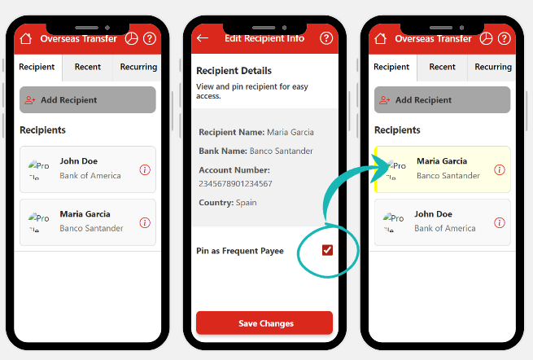
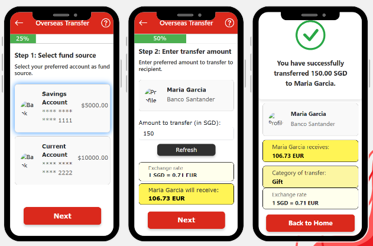
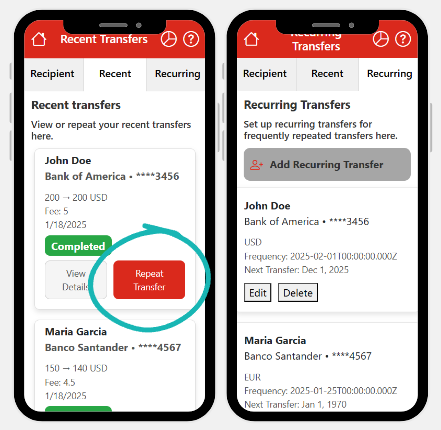
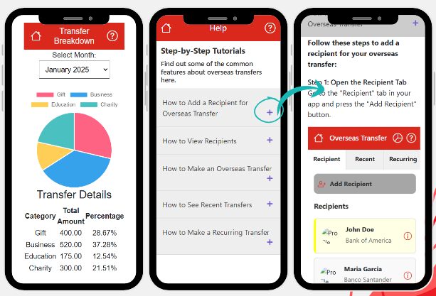

Digital Banking Accessible for Everyone
This project focuses on making digital banking more accessible for seniors by introducing intuitive features tailored to their needs. Users can view and pin frequently used recipients, ensuring better accessibility.
In the Overseas Transfer feature, I implemented a progress bar to guide users step-by-step, a real-time currency exchange function, and more to instill confidence during transactions.
The Recent and Recurring Transfers features allow users to repeat past transfers with a single tap or automate recurring transfers, ensuring timely payments without worries.
A monthly transfer breakdown using pie charts categorizes spending by category, helping seniors maintain financial awareness.